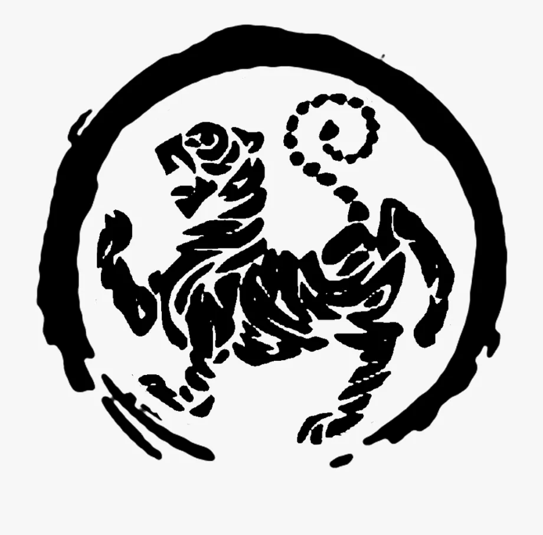
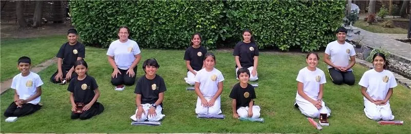

The tiger inside a circle is the best-known symbol of Shotokan Karate. It appears on badges, gi and dojo walls around the world. Here is where it came from, and what it can teach us.
Where the tiger came from
The tiger was painted by Hōan Kosugi, a well-known Japanese artist and a friend and student of Gichin Funakoshi, the father of modern Karate. Kosugi encouraged Funakoshi to put his teaching into a book, and drew the tiger for its cover. Funakoshi’s first book, Ryūkyū Kenpō: Karate, was published in 1922, and the tiger has been linked with his teaching ever since.
The idea came from an old Japanese expression, tora no maki, the “tiger scroll”: a book of essential teachings. The tiger also suggests the qualities Karate builds: strength, power and tenacity.
An unfinished tiger
Look closely and you will see that the tiger is not fully outlined. Its brushstrokes suggest the body without completing it. At EmptyHands we read this as a reminder that Karate is a complete system with many parts: stances, strikes, kicks, blocks, joint locks, pressure points, takedowns and controlling techniques. Neglect any one of them, and the whole is weakened.
The four pillars
We also see in the tiger the four pillars every class works through:
- Kihon (basics) - the stances and techniques everything else is built on.
- Kata (forms) - set sequences that hand down the techniques and strategies of the masters.
- Bunkai (application) - taking kata apart to discover their practical self-defence.
- Kumite (sparring) - applying techniques with a partner, safely and with control.
The circle: containing power
The circle around the tiger can be read as Funakoshi’s vision for Karate: power held within limits. Training gives real strength and skill, which must never be used impulsively or recklessly, only to defend yourself or protect those who cannot protect themselves.
The spirit of the tiger
Over the years, too many students give up their training because they never connect with the true spirit of Karate. Training with the right mindset makes all the difference, especially when times are hard.

These EmptyHands students kept training all the way through the lockdown period. They never gave up, and they showed the resilience and strength the Shotokan tiger stands for. Read more about the history of Karate-Dō.